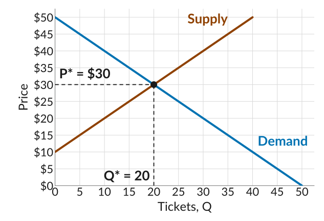
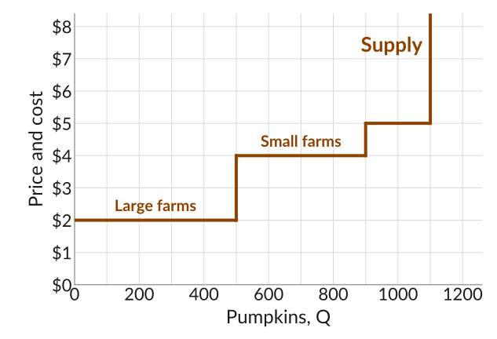

Lectures 15 and 16: Practice
Supply, demand, and price-taking firms
Lecture 15 slides · Lecture 16 slides · Worksheet 15 (PDF) · Module IV: Markets with Many Buyers and Sellers
Work through each problem on paper before you open its Solution.
1. Used textbooks
(Adapted from CORE 8.2 and 8.3) At a used-book sale run by the student union, students starting an introductory economics course buy used copies of the textbook from students who have finished it. All the copies are identical. Six buyers are willing to pay $40, $35, $30, $25, $20, and $15. Six sellers are willing to accept $10, $15, $20, $25, $30, and $35. To get the sale started, the union posts a suggested price.
(a) The union suggests a price of $30. How many students want to buy, and how many want to sell, at the suggested price?
Solution
At $30, the buyers willing to pay $30 or more are the ones at $40, $35, and $30: 3 buyers. The sellers willing to accept $30 or less are the ones at $10, $15, $20, $25, and $30: 5 sellers. That is an excess supply of 2: two sellers cannot find a buyer.
(b) Suppose instead the union suggests a price of $20. How many students want to buy, and how many want to sell, at the suggested price?
Solution
At $20, the buyers willing to pay $20 or more are the ones at $40, $35, $30, $25, and $20: 5 buyers. The sellers willing to accept $20 or less are the ones at $10, $15, and $20: 3 sellers. That is an excess demand of 2: two buyers cannot find a copy.
2. The homecoming game
Students resell tickets to the homecoming game to each other. The quantity of tickets demanded is \(Q^d = 50 - P\) and the quantity supplied is \(Q^s = P - 10\), where \(P\) is the price in dollars.
(a) Find the equilibrium price and quantity.
Solution
At the equilibrium, the quantity demanded equals the quantity supplied, so set \(Q^d = Q^s\): \[50 - P = P - 10\] so \(60 = 2P\) and \(P^* =\) $30. Then \(Q^* = 50 - 30 =\) 20 tickets. Supply gives the same: \(30 - 10 = 20\).
(b) Plot the demand and supply curves, with the price on the vertical axis and the number of tickets on the horizontal axis. Mark the equilibrium price and quantity.
Solution
Since the price goes on the vertical axis, it helps to write each curve with \(P\) on the left. Demand, \(Q^d = 50 - P\), becomes \(P = 50 - Q\). Supply, \(Q^s = P - 10\), becomes \(P = 10 + Q\).
Each curve is a straight line, so two points are enough to draw it. For demand, at \(Q = 0\) the price is $50, and at \(Q = 50\) the price is $0. For supply, at \(Q = 0\) the price is $10, and at \(Q = 40\) the price is $50. Plot each pair of points and draw a straight line through them. The lines cross at the equilibrium, 20 tickets and $30.

If you are given the curves in this form, with \(P\) on the left, you can also use them directly to find the equilibrium. Set the two prices equal: \(50 - Q = 10 + Q\), so \(40 = 2Q\) and \(Q^* = 20\). Then \(P^* = 50 - 20 = 30\), the same answer as in part (a).
3. Strawberries at the farmers market
(Adapted from CORE Exercise E8.3) Many stands at the Saturday farmers market sell the same baskets of strawberries. Demand is \(P = 20 - Q/10\) and supply is \(P = 2 + Q/20\), where \(Q\) is baskets a day and \(P\) is the price in dollars.
(a) Find the equilibrium price and quantity.
Solution
Set demand equal to supply: \[20 - \frac{Q}{10} = 2 + \frac{Q}{20}\] Collect terms: \(18 = \frac{Q}{10} + \frac{Q}{20} = \frac{3Q}{20}\), so \(Q^* = 18 \times \frac{20}{3} =\) 120 baskets.
Then \(P^* = 20 - 120/10 =\) $8. Supply gives the same: \(2 + 120/20 = 8\).
(b) At a price of $10, how many baskets are demanded and how many are supplied? What about at a price of $6?
Solution
At $10, demand gives \(10 = 20 - Q/10\), so 100 baskets are demanded, and supply gives \(10 = 2 + Q/20\), so 160 baskets are supplied: an excess supply of 60.
At $6, demand gives \(6 = 20 - Q/10\), so 140 baskets are demanded, and supply gives \(6 = 2 + Q/20\), so 80 baskets are supplied: an excess demand of 60.
(c) Where do we expect the price in this market to settle? Why there, and not at a higher or a lower price?
Solution
We expect the price to settle where the quantity demanded equals the quantity supplied, at the equilibrium price of $8.
If the price is too high, say $10, stands want to sell 160 baskets but shoppers only want to buy 100. Stands with unsold strawberries have an incentive to lower their price. As the price falls, shoppers want to buy more and stands want to sell less. The price keeps falling until the quantity demanded equals the quantity supplied, at $8.
If the price is too low, say $6, shoppers want to buy 140 baskets but stands only want to sell 80. Shoppers who go without are willing to pay more, so stands have an incentive to raise their price. As the price rises, shoppers want to buy less and stands want to sell more. The price keeps rising until the two are equal, at $8.
(We also expect a single price, not different prices at different stands: the baskets are identical and shoppers can walk from stand to stand, so no stand can charge more than the others and still sell.)
4. Pumpkin farms
(Adapted from CORE Question 8.5) Fifteen farms sell pumpkins at a roadside market, and every farm takes the going price. Five large farms can each grow up to 100 pumpkins at a marginal cost of $2. Ten small farms can each grow up to 40 pumpkins at a marginal cost of $4, and up to 20 more at $5.
(a) At a price of $3, how many pumpkins does each kind of farm sell? What is the market supply?
Solution
A large farm sells every pumpkin whose marginal cost is below $3: 100 each. A small farm’s marginal cost of $4 is above the price, so it sells none. Market supply is \(5 \times 100 + 10 \times 0 =\) 500 pumpkins.
(b) What is the market supply at $4.50? At $6?
Solution
At $4.50, large farms still sell 100 each, and small farms now sell 40 each (their extra pumpkins cost $5): \(5 \times 100 + 10 \times 40 =\) 900.
At $6, large farms sell 100 each and small farms all 60: \(5 \times 100 + 10 \times 60 =\) 1,100.
(c) Draw the market supply curve.
Solution

The market supply curve lines up all the pumpkins from cheapest to most expensive to grow: first the large farms’ 500 at $2, then the small farms’ first 400 at $4, then their last 200 at $5. At any price, farms grow every pumpkin that costs less than the price, so the curve steps up each time the price passes the next farm’s marginal cost. (Each flat part is a block of pumpkins with the same marginal cost; at exactly that price, the farms are just willing to grow them.)
(d) Demand is \(P = 8 - Q/100\). Find the equilibrium price and quantity. Which farms sell?
Solution
From part (a), market supply is 500 at every price between $2 and $4. Demand for 500 pumpkins needs a price of \(P = 8 - 500/100 = 3\), which is in that range. So the market clears at $3 and 500 pumpkins. Only the large farms sell, because the small farms’ marginal cost of $4 is above the price.
![The pumpkin market, price and cost on the vertical axis from 0 to 8 dollars in steps of 1, and pumpkins on the horizontal axis from 0 to 1,200 with gridlines every 100. Market supply is a staircase: flat at 2 dollars from 0 to 500 pumpkins, labelled large farms; up to 4 dollars and flat to 900, labelled small farms; up to 5 dollars and flat to 1,100, the small farms' extra pumpkins; then straight up. The demand line falls from 8 dollars at zero pumpkins to zero at 800. It crosses the supply staircase on the vertical step at 500 pumpkins, at 3 dollars, marked with a dot and dashed guides labelled P star equals 3 dollars and Q star equals 500.](../slides/img/pumpkins-equilibrium.svg)
(e) At the equilibrium price of $3, why can’t any one farm make more profit by charging a higher or a lower price?
Solution
A large farm that charges more than $3 sells nothing: shoppers buy identical pumpkins from the other farms at $3. A large farm that charges less, say $2.50, sells no more than it would at $3, since at $3 it can already sell all 100 of its pumpkins. It just earns 50 cents less on each one, \(100 \times 0.50 = 50\) dollars less in all.
A small farm cannot do better either. Above $3 it sells nothing, and at $3 or less every pumpkin costs it $4 to grow, so it would lose money on each one it sold.
So no farm can gain by charging anything other than the going price: each farm is a price-taker, and no one wants to change what they are doing. That is why the competitive equilibrium is a Nash equilibrium.
5. Multiple choice
Q1. Why does the price in a market with many buyers and sellers settle where the quantity demanded equals the quantity supplied?
- Sellers agree with each other to charge the price that gives them the most profit.
- Buyers and sellers split the difference between the highest and lowest valuations.
- At any other price, some buyers or sellers are left out and push the price.
- At that price, every buyer pays exactly what the good is worth to them.
Solution
Above that price there is an excess supply: some sellers are stuck with goods they would happily sell for a little less, so they cut their price. Below it there is an excess demand: some buyers go without goods they would happily pay a little more for, so they offer more. Only where the quantity demanded equals the quantity supplied is no one stuck, so no one has a reason to change the price. Sellers do not agree on a price, no one splits any difference, and most buyers pay less than their willingness to pay. (c) is correct.
Q2. The graph shows the market for bundles of firewood sold by many sellers near a campground. Suppose the price is $7. Select all the statements that are correct.
![The firewood market, price and cost on the vertical axis from 0 to 10 dollars in steps of 1, and bundles a day on the horizontal axis from 0 to 300 with gridlines every 20. A demand line falls from 10 dollars at zero bundles to zero at 200 bundles. A supply line rises from 1 dollar at zero bundles to 8.50 dollars at 300 bundles. A dashed horizontal line at 7 dollars is labelled P equals 7 dollars; it meets the demand line at 60 bundles and the supply line at 240 bundles. The demand and supply lines cross at 120 bundles and 4 dollars, which is not marked.](../slides/img/firewood-market.svg)
- There is an excess supply of 180 bundles.
- There is an excess demand of 180 bundles, so buyers bid up the price.
- Sellers left with unsold bundles have a reason to lower their price.
- The price falls until the quantities demanded and supplied are equal at $4.
Solution
At $7, buyers want 60 bundles and sellers want to sell 240, an excess supply of \(240 - 60 = 180\), not an excess demand. Sellers who cannot sell their bundles would rather sell for less than take them home, so the price falls. As it falls, more buyers want firewood and fewer sellers want to sell, until both reach 120 bundles at $4, where the curves cross. (a), (c), and (d) are correct.
Q3. In the market for used bikes on campus, demand is \(P = 200 - Q\) and supply is \(P = 50 + Q/2\). What are the equilibrium price and quantity?
- $100 and 100 bikes
- $150 and 100 bikes
- $50 and 75 bikes
- $125 and 75 bikes
Solution
Set demand equal to supply: \(200 - Q = 50 + Q/2\), so \(150 = 3Q/2\) and \(Q = 100\). Then plug \(Q = 100\) back into either curve for the price: \(P = 200 - 100 = 100\), and supply gives \(50 + 100/2 = 100\) too. (a) is correct.
Q4. A seller is a price-taker when:
- They choose the price on their demand curve that maximizes their profit.
- They charge the same price as their rivals because they have agreed to.
- Their marginal cost is lower than that of any of their rivals.
- They cannot gain by selling at any price other than the going price.
Solution
A price-taker cannot move the price but can sell as much as they like at it: asking more loses every customer to other sellers, and asking less gives money away. Choosing a price on a downward-sloping demand curve is what a price setter does, like Cheerios. Sellers who agree on a price are a cartel, not price-takers. A low marginal cost does not give a seller any power over the price. (d) is correct.
Q5. Why is a competitive equilibrium a Nash equilibrium?
- At the market price, sellers make the most profit they possibly can.
- No one can do better by trading at a different price, given what others do.
- Every buyer and seller gets the largest gain they could possibly get.
- Buyers and sellers agree together on the price that is best for the market.
Solution
A Nash equilibrium is an outcome where no one can do better by changing their own action, given what everyone else is doing. At the market price, a seller who asks more sells nothing and a buyer who offers less buys nothing, so trading at the going price is everyone’s best response. Sellers would earn more at a higher price and buyers would gain more at a lower one, so the market price is not the best possible price for either side, and no one agrees on anything: each person acts alone. (b) is correct.
Q6. Which seller is most likely to be a price-taker?
- One of twenty restaurants in a college town, each with its own menu.
- One of three wireless carriers selling similar phone plans.
- One of thousands of farms selling the same grade of wheat.
- A popular coffee shop with a loyal group of regulars.
Solution
A seller is a price-taker when there are many sellers and they all sell the same good, so buyers can switch freely. The restaurants are many, but each menu is different, so each can charge a bit more and keep some diners. Three carriers are too few: each one’s price affects the others. Loyal regulars mean the coffee shop can raise its price and keep many of its customers. Only the wheat farm has both many rivals and an identical product. (c) is correct.
Q7. In a town with many bakeries selling the same loaf, each bakery takes the price as given. Which statement about demand curves is correct?
- The market demand curve and each bakery’s demand curve both slope down.
- The market demand curve and each bakery’s demand curve are both flat.
- Each bakery’s demand curve is flat at the going price; the market demand curve slopes down.
- Each bakery’s demand curve slopes down; the market demand curve is flat at the going price.
Solution
If one bakery charges more than the going price, its customers buy from the other bakeries and it sells nothing, while at the going price it can sell as many loaves as it wants: its demand curve is flat. The town as a whole still buys fewer loaves when bread costs more everywhere, so the market demand curve slopes down. (c) is correct.
Q8. (Adapted from CORE Question 8.4) Lena runs one of many identical lemonade stands. Her marginal cost is $1 a cup up to 60 cups and $4 a cup up to 90, and the going price is $3. Select all the statements that are correct.
- Lena’s supply curve is horizontal at the going price of $3.
- If the going price falls to $2, she sells fewer cups than at $3.
- At a going price of $4, selling 60 or 90 cups pays the same.
- Her marginal cost curve is her supply curve.
Solution
Her demand curve is horizontal; her supply curve is the marginal cost step. At $2 she still sells 60 cups, since each one still adds $1. At $4, the cups beyond 60 cost exactly $4, so they add nothing to profit and she does equally well selling them or not. (c) and (d) are correct.
Q9. Why do we expect a market supply curve to slope upward?
- Sellers always want to earn as much as possible from every sale.
- When more is supplied, buyers become willing to pay a higher price.
- A higher price makes it worth selling units that cost more.
- At a higher price, sellers with low costs stop selling their goods.
Solution
A seller offers a unit when the price is at least its marginal cost, or the seller’s willingness to accept. Lined up from cheapest to most expensive, each extra unit costs more than the last. So at a higher price, everyone who was already selling still sells, and units that cost more now become worth selling too. (c) is correct.
Q10. A town has ten identical bakeries. Each can bake up to 50 loaves a day at a marginal cost of $3, and up to 30 more at $6. What is the market supply at a price of $5?
- 300 loaves
- 500 loaves
- 800 loaves
- 0 loaves
Solution
At $5, each bakery bakes the 50 loaves that cost $3, but not the extra loaves that cost $6. Market supply is \(10 \times 50 = 500\). (b) is correct.
Q11. In a city with many bakeries, the height of the market supply curve at 7,000 loaves is $2.74. Select all the statements that are correct.
- The marginal cost of the 7,000th loaf is $2.74.
- The average cost of all 7,000 loaves in the city is $2.74.
- At a price of $2.74, the bakeries want to sell 7,000 loaves.
- Each bakery in the city makes a profit of $2.74 on every loaf.
Solution
The market supply curve can be read two ways. Read up from a quantity, and its height is the marginal cost of that loaf: the 7,000th loaf costs $2.74 to make. Read across from a price, and it gives the number of loaves the bakeries want to sell: at $2.74, every loaf that costs $2.74 or less to make is worth baking, which is 7,000 loaves. It says nothing about average cost or profit. (a) and (c) are correct.